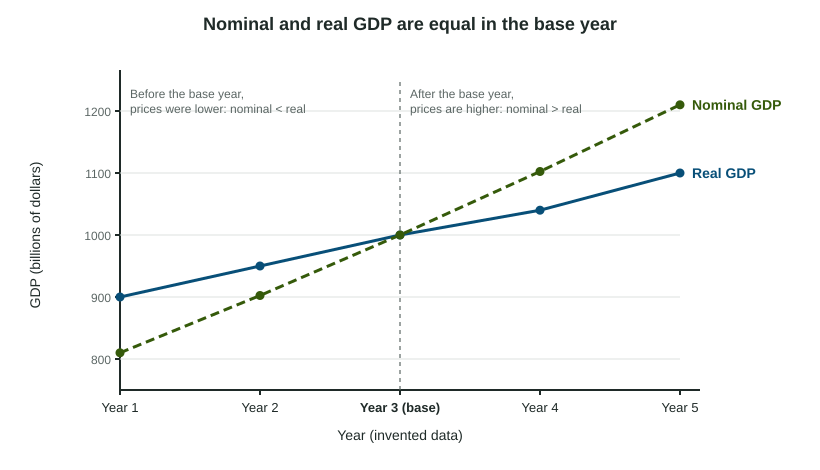

Two things can make GDP rise
GDP is output times prices, added up over every final good and service. So GDP can rise because the economy produced more, because prices went up, or both. To know whether people are actually producing more, you have to separate the two.
- Nominal GDP values each year's output at that year's prices.
- Real GDP values each year's output at the prices of a base year, so it changes only when quantities change.

Worked example: real GDP from quantities and prices (invented data).
Country X makes only apples and bread. Year 1 is the base year.
| Year | Apples | Price | Bread | Price |
|---|---|---|---|---|
| 1 | 100 | $2.00 | 50 | $4.00 |
| 2 | 120 | $2.50 | 50 | $5.00 |
Nominal GDP, Year 2 (Year 2 prices): dollars.
Real GDP, Year 2 (Year 1 prices): dollars.
Year 1 is the base year, so nominal and real GDP are both .
Growth. Nominal GDP grew
The GDP deflator
The GDP deflator is a price index for everything produced in the country:
In the example, : prices of the goods in GDP are 25% above the base year. Like every price index, the deflator is 100 in the base year. It is a number on a scale, not a percent and not dollars; a deflator below 100 means prices were lower than in the base year.
Turning the formula around gives the calculation the exam asks for most:
Worked example: real GDP from the deflator (invented data, billions of dollars).
| Year | Nominal GDP | GDP deflator | Real GDP |
|---|---|---|---|
| 1 (base) | 800 | 100 | |
| 2 | 900 | 120 | |
| 3 | 990 | 110 |
From Year 1 to Year 2 nominal GDP rose, yet real GDP fell from 800 to 750: output shrank while prices rose 20%. From Year 2 to Year 3 real GDP grew
The slips readers see most: multiplying by the deflator instead of dividing (1,080 for Year 2), turning the deflator fraction upside down (a value below 100 when prices rose), and leaving out the "× 100".
Growth, prices and living standards
The growth rate of real GDP is the percent change in real GDP:
A handy approximation: nominal GDP growth is about real growth plus inflation (the change in the deflator). If nominal GDP rises 6% while the deflator rises 7%, real GDP fell about 1%. A headline about "record GDP" in nominal terms can hide a fall in output.
To compare living standards over time, go one step further and divide by population: real GDP per capita removes both price changes and population growth. Nominal GDP per capita still includes price changes.
The deflator and the CPI
| GDP deflator | Consumer price index | |
|---|---|---|
| Goods covered | Every final good and service produced in the country (C, I, G and exports) | A fixed basket of goods and services households buy |
| Imports | Left out (not produced at home) | Included if households buy them |
| Calculation | Nominal GDP over real GDP, times 100 | Basket cost now over basket cost in the base year, times 100 |
Both are price indexes with a base year of 100, and the percent change in either one is an inflation rate. Statistics agencies now compute real GDP with chained prices from neighboring years rather than one fixed base year, because a single base year can overstate growth as relative prices change; the AP® Macroeconomics exam uses the base-year method shown here.